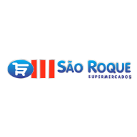

Experiência profissional
-
 Akzo Nobel - Jan/ 2019 - Mai/ 2020
Akzo Nobel - Jan/ 2019 - Mai/ 2020
Jovem Aprendiz - Aux. de Escritótio.
- “Realizava o tratamento e arquivamento físico e digital de todos os arquivos em poder do setor de logística e também realizava algumas movimentações de estoque com o SAP”. -
 São Roque Supermercados (Emprego atual)
Repositor de hortifruti.
- “Responsável pela reposição de mercadoria, organização e abastecimento das gôndolas de acordo com a PVPS (FEFO); Organização de estoque; Inventário de produtos; Contagem de Perdas e Atendimento ao cliente”.